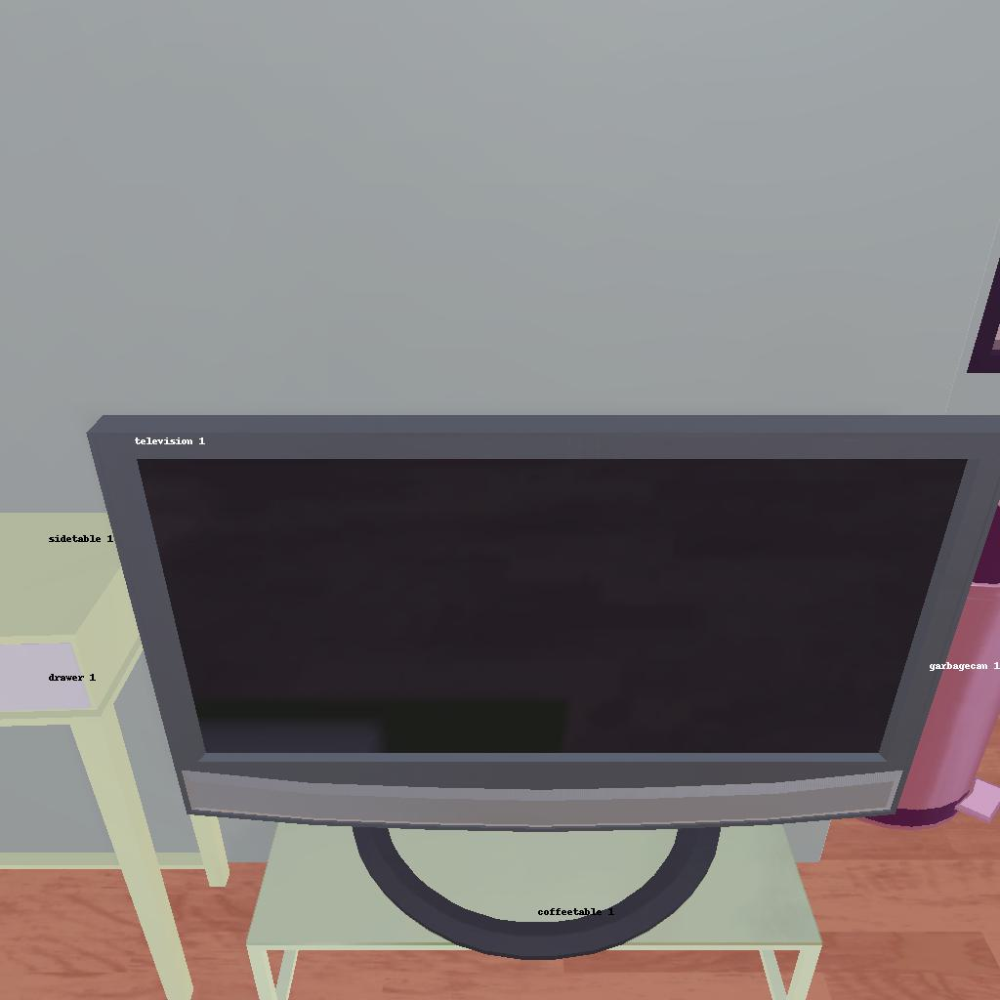

---------------------------------------------------------task: 4---------------------------------------------------------
--------------------------------------------------------------------------------------------------------------------------------------------------------------------
--------------------------------------------------------------------------------------------------------------------------------------------------------------------
Step:--------------------------------------------------------------------------1-------------------------------------------------------------------------------
----------------------------------------
VLM Prompt:
Image1:
Image2:
**Instruction**
1. Analyze the provided image to identify all visible household objects, focusing on those relevant to the task description "look at statue under the floorlamp."
2. Use the analysis of the image and the task hint "The agent must find an object of the desired type, locate and turn on a light source with the desired object in-hand." to answer the question: what is the most reasonable action in the choices for the task description "look at statue under the floorlamp"?
4. Decide and write the answer using the template: The answer is: (i): , where i is the real number. If there is no desired object in the image, search every place based on **Initial Observation** to find the object. And if no one is exactly correct, choose a similar answer.
**Initial Observation**
You are in the middle of a room. Looking quickly around you, you can see armchair (1), coffeetable (1-2), sidetable (1), garbagecan (1), drawer (1), sofa (1), diningtable (1)
**Answer Choices**
(1): go to armchair 1
(2): go to sidetable 1
(3): go to garbagecan 1
(4): go to drawer 1
(5): go to sofa 1
(6): go to coffeetable 2
(7): go to diningtable 1
(8): take television 1 from coffeetable 1
(9): examine coffeetable 1
**Answer**
Let's think step by step by following the instructions.
----------------------------------------
----------------------------------------
Original Response:
First, we need to identify all visible household objects in the provided images. In Image 1, we can see a sofa labeled "sofa 1" and a floorlamp next to it. In Image 2, we see a television labeled "television 1" on a coffeetable labeled "coffeetable 1," a sidetable labeled "sidetable 1," a drawer labeled "drawer 1," and a garbage can labeled "garbagecan 1."
The task description is "look at statue under the floorlamp," which implies that we need to find a statue located under or near the floorlamp. From the initial observation, we have a list of objects and furniture pieces in the room, but none of them are explicitly labeled as a statue. However, we can use the context of the task to infer that the statue is likely to be on a surface or stand, such as a sidetable or coffeetable, near the floorlamp.
The task hint suggests that the agent must find an object of the desired type (the statue), locate and turn on a light source (the floorlamp) with the desired object in-hand. Since there is no explicit mention of the statue in the initial observation or images, we must search every place based on the initial observation to find the object.
Given these considerations, the most reasonable action from the choices provided would be to go to the sidetable or coffeetable near the floorlamp, as these are typical places where one might find a statue. Since "sidetable 1" is explicitly labeled in Image 2 and is a surface that could hold a statue, it is a plausible location to check.
The answer is: (2): go to sidetable 1.
----------------------------------------
----------------------------------------
>>> Refine Original VLM Response and Get Pure Action: go to sidetable 1
----------------------------------------
-----------------------------------------------------------------
Running time: 28.742342948913574 seconds
Total Money: 1.85767
-----------------------------------------------------------------
-----------------------------------------------------------------
Text Observation:You arrive at loc 2. On the sidetable 1, you see a statue 1, and a pen 1.
-----------------------------------------------------------------
UNSUCCEED